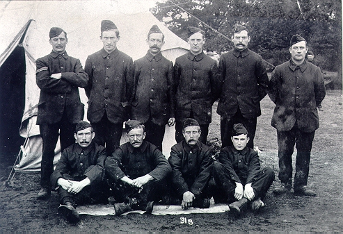
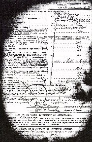
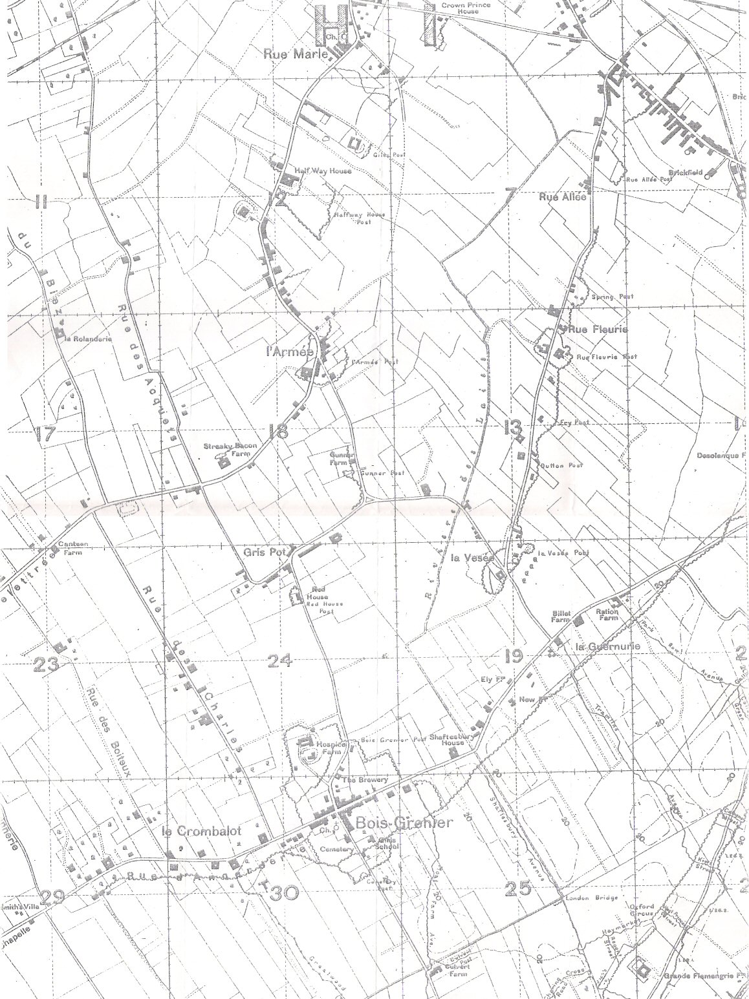
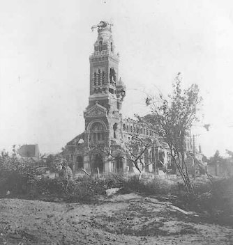

9th South Staffordshire Regiment
(text in italics is extracted from the 9th South Staffordshires War Diary)

Tom, back row -third from left, with his Company including his
brother-in-law Thomas Warren, corporal on back row.
Dressed in the 'blue serge' uniform issued between Oct 1914 - Feb 1915.
Tom Drury volunteered at Loughborough Drill Hall a few weeks after the outbreak of war on the evening of 24 September 1914 with his brother-in-law Thomas Warren and other friends. He was 44 years old, but informed the Recruiting Sergeant that he was ten years younger. Tom was enlisted into the Leicestershire Regiment (Regular Army) as Private 15452 and immediately posted to depot. On 30th September he and Tom Warren were posted to the 9th Battalion of the South Staffordshire Regiment at Lichfield. It is not clear why, it may simply have been that the Leicestershire Regiment was oversubscribed.

The 9th South Staffs Regiment was formed at Lichfield in September 1914. The battalion was attached to the 23rd Division (Kitcheners Third New Army) at Bourley Bottom, Aldershot. Equipment of all kinds was in short supply and so were cooks. Trained cooks were non-existent in the Division and contract catering was bought in until the Division trained its own chefs early in December. It was probably at this time that Tom trained for his new trade. Uniforms were also in short supply and recruits paraded in a combination of khaki and civilian clothing. In October emergency blue-serge clothing and obsolete Lee-Metford rifles were issued. Training at this time consisted of squad drill, physical training, running, marching, night work and entrenching.
In December 1914 the 9th South Staffs moved to Talavera Barracks, Aldershot and were assigned as a Pioneer Battalion. It is said that a census of battalions was carried out and the 9th was found to have a high number of trades appropriate to a Pioneer Battalion. On December 16th Christmas leave was opened and every man was granted seven days leave and a free return warrant home.
The bad weather continued through January and there were many cases of pneumonia amongst the Division. In February the long awaited khaki uniforms arrived and on February 24 1915 the Division began its march to Shorncliffe, Kent in three columns. They arrived on March 1st and Tom's Battalion were quartered at Folkstone. The following months were marked by hard training and inspections. The 9th South Staffs had during this time been employed on the defences of London and had been working on trenches between Westerham and Knockholt. For part of this period the Battalion were billeted at Bromley in Kent.
On May 24 1915 the Division entrained to Borden where the Pioneers went into camp at Oxney Farm. At the end of July all ranks were given seven days leave. On August 16 the Division formed up at Hankley Common to be inspected by the King and the following day orders were received to embark for France. On arrival the battalion formed part of the 69th Infantry Brigade in the 23rd Division.
20th August 1915 - Borden Camp [Hants] - 5.30pm order received to recall all ranks from leave.
22nd August - 5pm - order to proceed to Southampton on 23/8 to be in Havre on 25/8
23rd August - arrived Southampton Docks by 12.20pm. Problems experienced in keeping the men together
24th August - 4pm - 6 Officers, 92 Other Ranks and 104 horses "the whole of the Battalion" [sic] sailed in City of Dunkirk and La Margarette
25th August - 2.45am - arrived after smooth crossing, disembarked 7am. Marched to No.5 Rest Camp. Collected 32 horses, 12 two-wheeled carts and 6 four wheeled carts . Left 2 officers and 120 men at no 5 Rest Camp and entrained at Gare de Marchadise . Journey via St Omer to Tilques , with danger from hostile aeroplanes on the way.
31st August - Engaged in bayonet drill, fire discipline etc. Officers detached to MG school.
4th September- 320 NCOs and men employed under Commander Royal Engineers (CRE) on defence work at Calais and Dunkirk
Having been settled around St Omer they then moved to the Armentires area until April 1916 with the Pioneers occupying billets at Fort Rompu. In September the battalion played a supporting part in the battle of Loos.
5th September- Ordered to move out for Arques and Hazebruck [sic]
7-11th September- at Merris then Rouge de Bout
12th September- under 20th Divn at Fort Rompu
17th September- Building shelters
18th September- C Coy. forms right sector of defence of Division
19th September- Erquinghem - working on communications trenches and dug outs
21st September- Suffer first casualty - 16033 Pte H Gerrard of D Coy wounded in thigh. III Corps to go on offensive
[Battle of Loos]
24th September- Bois Grener [sic] - B Coy attached to 68 Bde; C to 69 and D to 70. HQ and A Coy at La Motte. MG section attached 69 Bde.
26th September- received draft from 11th South Staffords. Now 30 Offs. and 1020 rank and file.
27th September- 14444 Pte. T.H Mansell wounded in foot.
30th September- B Coy and MG section garrison and improve strongpoints. Rue Marle, Halfway House; L'Armee; Gris Pot; La Visee; Rue Fleuree and Rue Allee
Battalion HQ remained at Rue Marle , with the Companies detached on work details or as garrisons. The impression is that after settling in, the Battalion adjusted to a daily routine of trench work, including might work. A Company seems to have spent most of its time making hurdles, and included a diagram in its own War Diary. The other companies also kept separate diaries when on detached duties.
1st October 1915
A Coy at La Motte [a.k.a La Motte au Bois] making hurdles
B Coy employed as 30/9/15
C Coy improving and reconstructing support trenches
D Coy draining and improving Shaftsbury Avenue communication trench
2nd October- Companies in place as they were the previous day, but at 10am B Coy was shelled at La Fleurie Post. Pte 13412, Carter B. and Sgt. B Davis were wounded, Pte. Carter dying of his wounds by 9pm
3-18th October- A and B Coys employed as before. C Coy. Working on the Grenier Line - 50 men on barbed wire entanglements in the rear of the first line and 50 at work paving Shaftsbury Avenue with bricks. D was revetting and repairing Cowgate Avenue communication trench. They remained in these locations until the 18th, but with D Coy sending 30 men to Brasserie as a carrying party on the 9th and working on Brick Street communication trench from the 10th to the 13th.
At 3pm on the 13th Lavisee Post was shelled "and twawled" [sic] causing C and B Coy working parties four casualties. Wounded were
14148 Pte Dennis J. C Coy
15041 Pte Harris L.J.
15257 Pte Smith E B Coy
14472 L/Cpl Chapman, C - L/Cpl Chapman died of wounds the following day.
19th October- With the other companies working as before - A was still making hurdles - D was at work on Trench 61 and 66 revetting and sandbagging. At 5pm the Battalion was asked for an estimate of its remaining small arms ammunition by Division and reported 8500 rounds. They were later ordered to send this to the railhead at Strazeele. All full boxes were to be sent to Divisional Ordnance at Croix du Bac, and any loose rounds boxed up and returned too.
20th October - D had moved to Brick Street and was working on a railway and dugouts. Permission was received by Battalion HQ to swap A and C companies - C was working on dugouts at Bois Grenier. The companies remained in place until 22/10, with C also working on Shaftsbury Avenue on the 21st.
22nd October -Only B remained in place. A company arrived at Battalion Hq en route to Bois Grenier at 5pm, arriving to join C at 6pm. They had had two casualties that day: at 7.30 L/Cpl Guest [sic] was wounded in the leg by a stray bullet and at 11 that morning 13360 Pte Whitehouse T. was slightly wounded in the head by a "HE splinter". Whilst C Coy was preparing to move out for La Motte , D was employed on front line dugouts and rebuilding and revetting the parapet of Brick Street. C moved off to La Motte the following day, leaving A Coy "settling down" at in the Bois Grenier Line .
Routine administration continued alongside work, with five men sent home for officer training:
Sgts. Bathurst W.J. and Lloyd E; Ptes Barton E and Webb D and L/Cpl Preston P.L
With the companies on detached duties, the Battalion War Diary refers to the separate documents for more details from this point on, but the general routine seems to have continued as before
A Coy - Worked at Bois Grenier (24th); Park Road Avenue communication trench (25th); Park Road Avenue, Haymarket, Oxford Circus and Shaftsbury Avenue (27th) and at Haymarket and Park Row Avenue on the 28th, 29th and 30th. On the 26th they went to the Divisional baths in the afternoon, but were able to do "little or no work" that night due to heavy shelling.
D Coy. - Worked on Fire Trench 62 on the 25th, on Willow Avenue (night of 26-27th). On the 28th they were making knife rests and entanglements at Rue de Bois and working in Willow Avenue - a communication trench. Cpl.W Watts was wounded in the back by a spent bullet. On the 29th they converted dugouts in Trench 66 moving to Railway Walk on the 30th

The November War Diary includes loose items for individual companies/posts. These aren't identified and it is not always clear who is featured.
B Company - Posts at Halfway House and Rue Allee and Rue Fleuree were under Lt. AE Smith. These are confirmed as B Coy posts as Smith recorded an order from Capt. Rabon William, OC B Coy on 3 Nov, and as they were recorded as B Coy posts on 30/9/15.
1st November- [ Halfway House Pos t] -" Showery worked on post"
2nd November -"Very wet, no work possible"
3rd-4th November - Fine, work recorded as 1st Nov
5-9th November - Working on Railway Avenue. One man, not named, killed by artillery on 9th
10-11th November - Cowgate Avenue
From 12th to the 29th work concentrated on the Post.
24th November -"dugouts E of road under water owing to sump having filled"
Rue Allee Post
1st November - "Dull in the morning, poured with rain rest of day"
2nd November - "One deep shelter trench has collapsed"
3rd November - Two dugouts collapsed
4-6th November - Working as 3rd
7th November - Railway Avenue - Pte 15950 BEAVER [?] G. missing but found by French police - at Bn guard room
8th November - Baths
9-10th November - Working on MG emplacements
11th November - Helping unload pumping machinery for the RE
14th-28th November - Work including Wine Avenue - snow on the 26th
Rue Fleuree
1st November - "Work Done finished sandbagging guard room. Strengthening parapet, laying down steps in trenches. Weather: dull in morning rained all afternoon and evening. Paid the men in afternoon."
2nd November - "very wet" dug drains round officers dugout
3rd November - Ordered to stop all work at 7.45. Orders to report to Halfway House (less 1 NCO and 3men…) 8.30
4th November - "Haversack rations, bandolier, rifle, pick and shovel, wire cutters and all mauls."
4th November - Went to Railway Avenue. Working on Railway Avenue, Cowgate and Wine Avenues until 28th. Shelled on the 24th and 25th - 25th - "a 5'9'' shell was put in the roof of farm and wrecked the kitchen" "snow in the morning, freezing at night" On 27th Smith recorded the work pattern as 8-12 in the morning and 8-Midnight, with shelling at 1.30 which did slight damage.
La Motte Au Bois - Probably C Company who moved there on 22nd October
Whichever company this was clearly had a miserable first half of November. Each day seemed to be spent working on hurdles - 132 were made on the 1st, 162 on the 3rd, and 170 fascines were made too. The recording officer noted that he was considering transfer to an RE Tunnelling Company, and on the 7th, a Sunday made the dismal note "No work, nothing of importance happened".
The men's health was suffering. On the 8th November 17 men reported sick, and on the 18th the Company was examined for scabies. 12 men were reported as infected on the 19th and the Diary notes that all of the company were very dirty "but it is not the fault of the men"
The Company left La Motte au Bois at 9.45 ion the morning of the 24th, arriving at billets by 3.20pm. Billets were six huts and a large barn.
Work was now on dugouts and Queen Street
18th November - "a battery of archibalds took up position near the billet and were soon in action as the German aeroplanes were very active" AT 9.30pm [sic] "Archies ran out of ammunition" and the Company helped to bring up more. "very frosty"
Battalion HQ Diary
1st December - At Rue Mare . A Coy at Shaftsbury Avenue; B in Wine Avenue; C detached so a separate diary; D- rebuilding support line
Capt. and Adjutant S.L Branning[?] temporary OC B Coy in place of Capt Williams
Lt J Glendinning - acting Adjutant
Captain J.R.Williams [ex.B Coy] acting transport officer for Lt Ord.
Lt Ord 2-I-c B Coy in place of Capt. Bradshaw.
3rd December - "Steady rain has been falling all day" 30 men sick.
4th December - Heavy rain. 40 men sick . "20 4.7 [shells] dropped around battalion HQ" No South Staffords casualties "but 12 killed on our right"
5th December - New officers - Lt Wedekind CW; Lt Hipkins EC; 2/Lt Christian WDD; [?] 2/Lt Haden [?] HF
20 men sick. 10 medicine and duty, 5 light duty, 5 excused duties. On this day, then the Battalion lost 25% of its sick men, with 50% lost to full duties. The actual sickness rate only reflects those who bothered to report sick, and the effectiveness of those on "medicine and duty" may have been questionable.
6th December - A Coy to replace C in Bois Gernier Line
7th December - Division ordered that Companies "shall be changed around on Sundays"
10th December - 22 sick
11th December - Lt Munro [?] and party moved to Halfway House instead of Battery House "because the artillery was already in occupation of the latter… and objected to the infantry going in as they were concerned the infantry would expose the position of the Battery to the enemy". Lt Deeson admitted to 70 Field Ambulance.
13th December - "Miserably cold" 15846 Pte J Rogers [?] of D Coy wounded in head by bullet. 25 men sick. 1 sent to Field Ambulance, 6 excused duties.
14th December - 32 sick. 17996 Pte Dakin [?] C Coy wounded in chest.
15th December - 26 sick, 3 to Field Ambulance
25th December - "Christmas Day. Heavy artillery duels all day otherwise nothing to report except 1 casualty in C Coy and one accidental injury in D Coy" [loading in the RE yard]
27th December - 34 men sick
28th December 1915 - New RSM "14684 CSM Kilvert CR vice RSM Barret t

The Division was relieved after a lengthy five month spell in the front line by 34th Division, between 26 January and 8 February 1916. After a certain amount of confusing movement, Divisional HQ was established at Blaringhem and the units concentrated around Bruay.
The battalion served on the Souchez Front until June 1916. From June to August 1916 the Pioneers were engaged on the Somme, holding defensive positions near Albert. When approaching Calonne there is a story that a Company of Pioneers marched directly into the line in fours followed by their first line transport and unaware that they were in full view of the enemy. It must have been the German observers dinner hour for not a single shot was fired.
1st July 1916 - Bazieux - Albert - Contalmaison - Pozieries - Munster Alley (War Diary notes clearing the battlefield on 8/7/1916)
On July 7th the Battalion was at Contalmaison and again in early August. Besides improving lines of communication and finding carrying parties it had the unpleasant task of burying the dead of both sides and between 11th and 16th July 1916 buried 1,500. The Division moved back to Armentieres for a peaceful month before being posted to Le Sars and taking part in its capture between 15th and 22nd September.